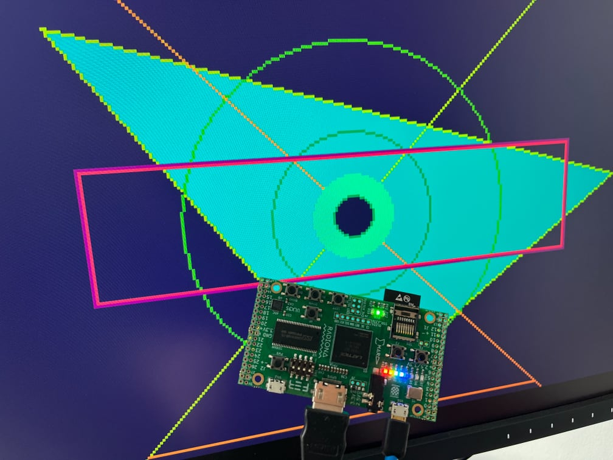
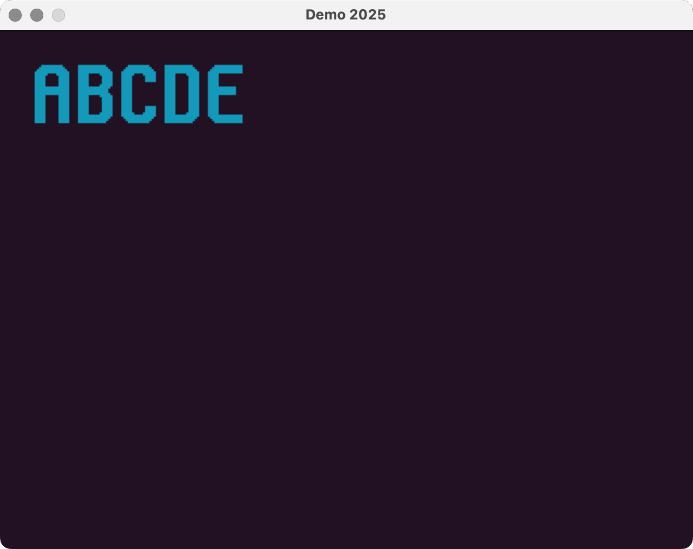
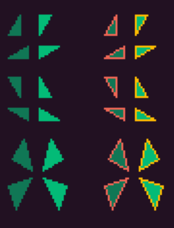
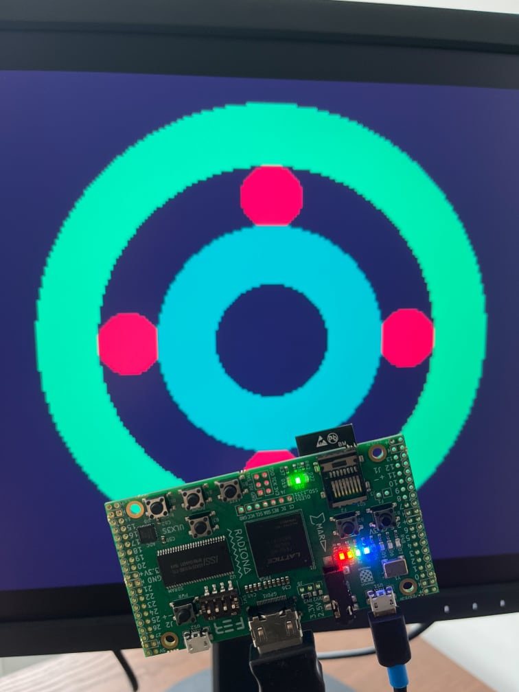
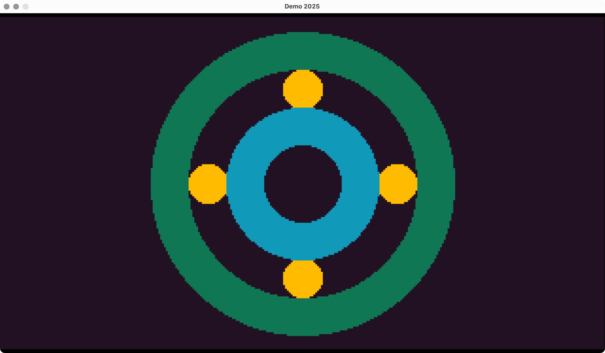

Earthrise FPGA Graphics
This is an unpublished early draft of content for a new FPGA series coming Summer 2025.
Over the last few months I’ve been working on an FPGA graphics engine called Earthrise. Earthrise is a 2D graphics engine that aims to be simple yet expressive.
Earthrise reads a list of drawing instructions, executes them, then outputs coordinates and colours for writing to VRAM. Drawing instructions set coordinates, colours, and draw shapes, including lines, triangles, circles and rectangles. A CPU provides a command list to Earthrise, then leaves Earthrise to do the drawing while it gets on with other things.
I am developing Earthrise with a ULX3S ECP5 dev board and Verilator/SDL simulation, but plan to support additional boards once I release Earthrise.
I plan to release Earthrise under an open-source licence in mid-2025.
{kind=link}
Drawing Examples
Earthrise instructions are 16 bits long and designed to be easy to read and write in hex format. Instructions can load a coordinate or colour registers, or run a drawing command that uses values from these registers.
Set the line and fill colours (these are indexes to the palette):
0xC00A // line colour A = 0xA
0xC108 // line colour B = 0x8
0xC204 // fill colour A = 0x4
0xC305 // fill colour B = 0x5
Draw a line between (8,16) and (16,24):
0x0008 // x0 = 8
0x1010 // y0 = 16
0x2010 // x1 = 16
0x3018 // x2 = 24
0xD100 // draw line (line colour A)
Draw filled circle at (160,88) with radius 64:
0x00A0 // x0 = 160
0x1058 // y0 = 88
0x2040 // r0 = 64
0xD201 // draw filled circle (fill colour A)
Draw an outline and filled triangle with vertices (60,20), (280,80), and (160,164) in B colours:
0x003C // x0 = 60
0x1014 // y0 = 20
0x2118 // x1 = 280
0x3050 // y1 = 80
0x40A0 // x2 = 160
0x50A4 // y2 = 164
0xD303 // draw filled triangle (colour B)
0xD302 // draw outline triangle (colour B)
Development Photos




